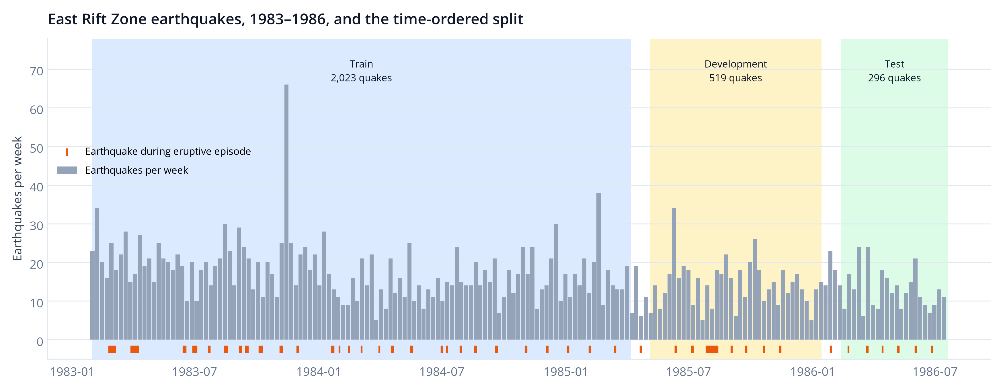
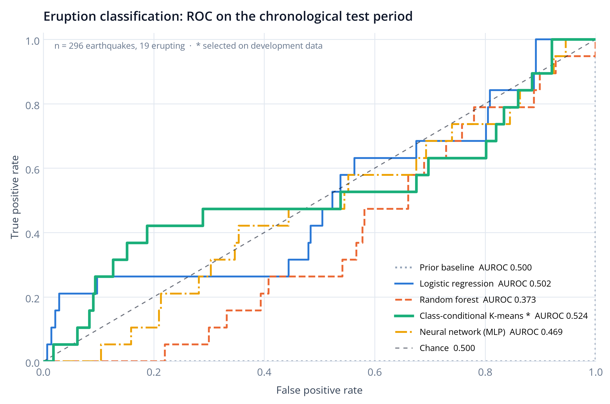
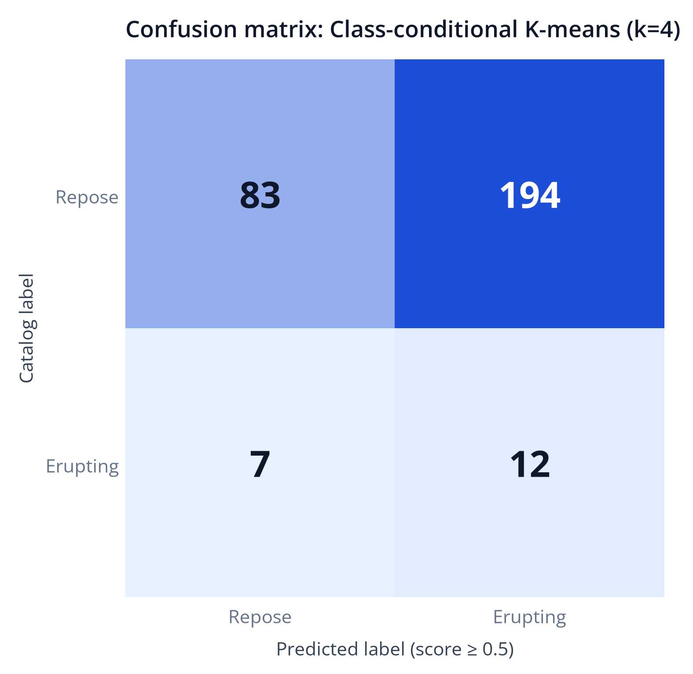
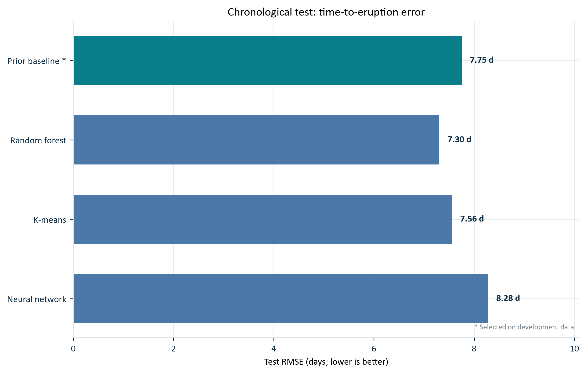
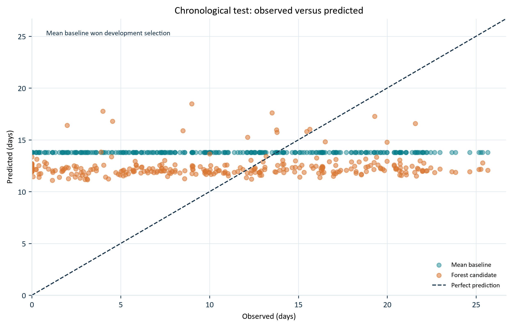
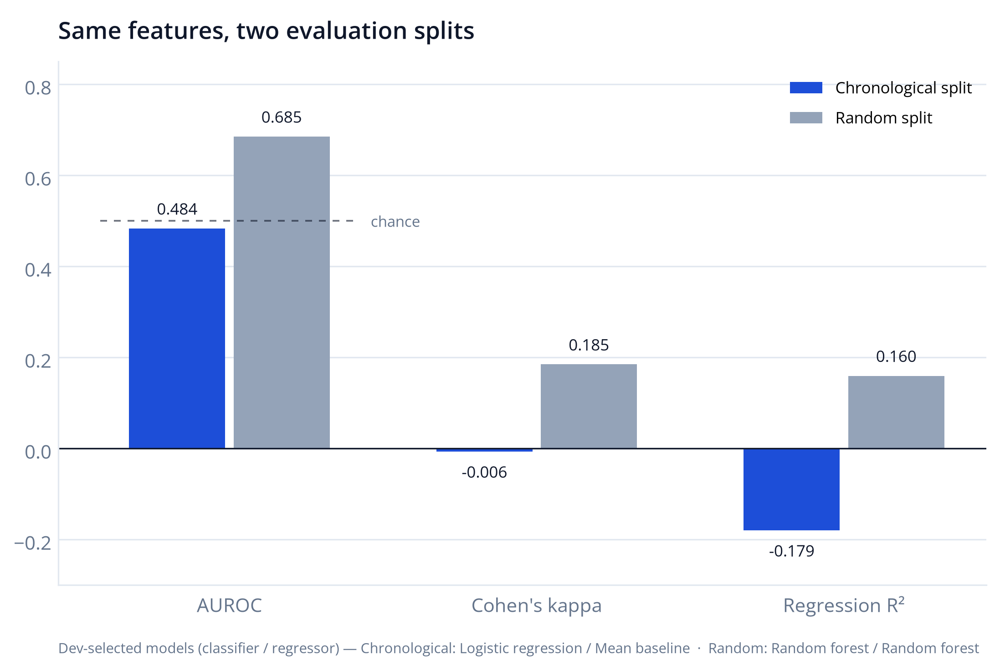

Results on the held-out test period
On earthquakes from February to July 1986, the models score close to chance. The development-selected classifier (Class-conditional K-means, k=4) found 12 of 19 eruptive earthquakes but flagged 194 of 277 repose earthquakes. These are classroom results on historical data, not eruption forecasts or calibrated hazard probabilities.
Data
The bundled catalogs (identical to the original PEEVED files) hold 6,485 ANSS earthquakes and 49 eruption entries from the Hawaii Center for Volcanology. Filtering to the East Rift Zone leaves 3,764 earthquakes, the same count as the paper. After a 30-day warm-up for the rate features and the end of reliable eruption coverage, 2,960 earthquakes remain, 304 of them (10.3%) during an eruptive episode.

Episode 48 duration. The catalog lists 173,566,800 hours for episode 48 (about 19,800 years). We keep its onset, 20 July 1986, as the end of coverage and never use the duration. The original code used it as-is, which labels every later earthquake as erupting; applying that rule to these files, 282 positive labels come from that row alone.
Label check. On all 2,960 modeled earthquakes our labels match the original PEEVED rule exactly. That rule labels 22.4% of the 3,764 earthquakes as erupting; excluding the episode-48 rows and the 522 warm-up earthquakes of January 1983 gives our 10.3%.
Method
- Features. Longitude, latitude, depth, magnitude, and the number of earthquakes in the previous 1, 7 and 30 days, counted strictly before each event.
- Labels. Erupting if inside an episode's duration plus a 24-hour buffer; time to eruption in days to the next onset.
- Split by time. Train 2,023 · development 519 · test 296 earthquakes, with 30-day gaps and no labels that leak across a boundary.
- Select, then test once. Baselines, logistic regression, random forests, K-means and an MLP are tuned on development data; the winner is fixed before the test period is scored.
Is the volcano erupting?


| Model | Setting | Dev AUROC | Test AUROC | Avg. precision | Kappa | Recall | Precision |
|---|---|---|---|---|---|---|---|
| Prior baseline | prior | 0.500 | 0.500 | 0.064 | 0.000 | 0.000 | 0.000 |
| Logistic regression | C=1 | 0.555 | 0.502 | 0.125 | −0.009 | 0.684 | 0.060 |
| Random forest | depth=None | 0.549 | 0.373 | 0.050 | 0.000 | 0.000 | 0.000 |
| Class-conditional K-meansselected | k=4 | 0.572 | 0.524 | 0.096 | −0.012 | 0.632 | 0.058 |
| Neural network (MLP) | alpha=0.001 | 0.476 | 0.469 | 0.061 | −0.006 | 0.000 | 0.000 |
How many days until the next eruption?


| Model | Setting | Dev RMSE (d) | Test RMSE (d) | Test MAE (d) | Test R² |
|---|---|---|---|---|---|
| Mean baselineselected | mean | 10.41 | 7.75 | 6.60 | −0.179 |
| Random forest | depth=5 | 10.69 | 7.30 | 6.25 | −0.048 |
| Joint K-means | k=10 | 14.10 | 7.56 | 6.40 | −0.121 |
| Neural network (MLP) | alpha=0.1 | 11.20 | 8.28 | 6.93 | −0.345 |
Why a random split looks better
The paper split earthquakes at random (stratified 70/20/10). Earthquakes from the same swarm then appear in both training and test sets, so the test is easier than predicting a later period. Running our pipeline with that split selects random forests and gives higher scores.

| Test metric | Time-ordered | Random (ours) | Paper (random) |
|---|---|---|---|
| Classifier | Class-conditional K-means | Random forest | Random forest |
| AUROC | 0.524 | 0.682 | 0.71 |
| Kappa | −0.012 | 0.114 | 0.52* |
| Regressor | Mean baseline | Random forest | Random forest |
| RMSE | 7.75 d | 11.01 d | 0.64 (scaled) |
| R² | −0.179 | 0.160 | 0.38 |
* Paper figures 4 and 5, test set. The paper's text quotes kappa 0.42. Its RMSE is on a standardized target and cannot be compared with RMSE in days. With only 19 eruptive earthquakes in our test period, a bootstrap 95% interval for the AUROC spans roughly 0.37–0.68.
Key code
Past-only earthquake counts · src/data.py
def past_counts(times, days):
"""Count events in [t-days, t), excluding every event at the current timestamp."""
t = pd.DatetimeIndex(times).to_numpy(dtype='datetime64[ns]')
if np.any(t[1:] < t[:-1]):
raise ValueError('Earthquakes must be sorted by time')
return np.searchsorted(t, t, side='left') - np.searchsorted(t, t - np.timedelta64(days, 'D'), side='left')Time-ordered split with gaps · src/experiment.py
else:
unique = data.time.drop_duplicates().sort_values().to_numpy()
dev_start, test_start = pd.Timestamp(unique[int(.7*len(unique))]), pd.Timestamp(unique[int(.9*len(unique))])
gap = pd.Timedelta(days=gap_days)
train = indices[(data.time < dev_start-gap) & (data.label_available_time < dev_start)]
dev = indices[(data.time >= dev_start) & (data.time < test_start-gap) & (data.label_available_time < test_start)]
test = indices[data.time >= test_start]Model selection (outline) · src/experiment.py
for family, config, model in candidates(task, seed):
model.fit(X.iloc[train], y.iloc[train]) # train window only
metric = score(model, X.iloc[dev], y.iloc[dev]) # development window
keep the best config per family
winner = family with the best development score # frozen before any test metric
test metrics are computed once, for every family's dev-best modelReproduce
Python 3.12 with the pinned requirements.txt (scikit-learn 1.7.2). The notebook notebooks/walkthrough.ipynb walks through every step with saved outputs.
python -m unittest discover -s tests -v # pipeline checks
python -m src.experiment --protocol both # retrain and evaluate (~30 s)
python demo.py --row 0 # score one held-out earthquake
python scripts/build_figures.py # charts from saved results
python scripts/build_site.py # this page